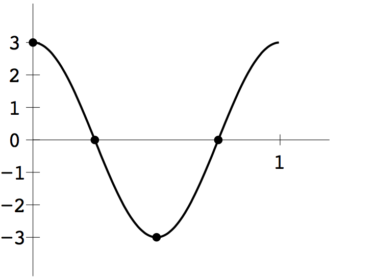
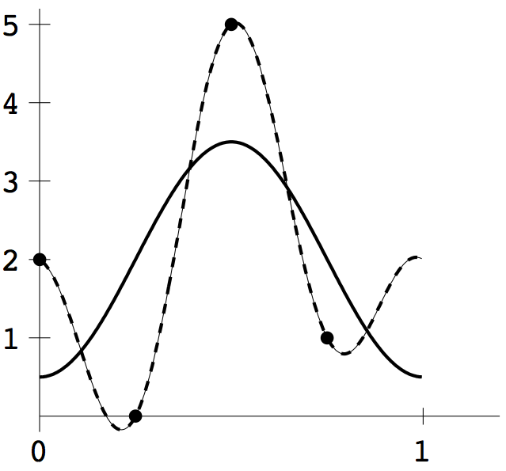
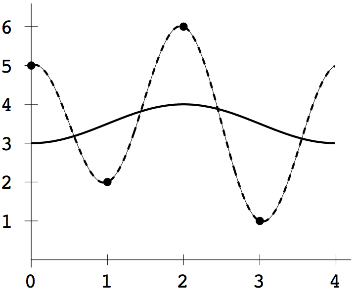
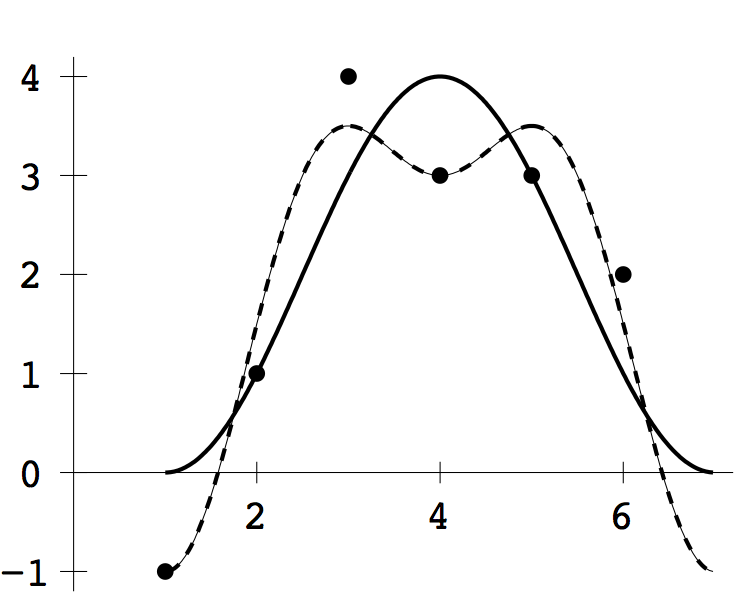

1 (b) The DFT of \([2,0,5,1]\) is \([4, -3/2+i/2, 3,-3/2-i/2]\), so \(a_0=4, a_1=3/2, a_2=3, b_1=1/2\). Therefore the trigonometric interpolating function is \(F_4(t)=2-\frac{3}{2}\cos 2\pi t-\frac{1}{2}\sin 2\pi t+\frac{3}{2} \cos 4\pi t\), and the least squares approximating function of order 2 takes the first two terms: \(F_2(t)=2-\frac{3}{2}\cos 2\pi t\). The plot below shows \(F_4(t)\) as the dashed curve and \(F_2(t)\) as the solid curve.

1 (c) The DFT of \([5,2,6,1]\) is \([7, -\frac{1}{2}-\frac{1}{2}i,4,
-\frac{1}{2}+\frac{1}{2}i]\), and \(a_0=7,a_1=-1/2,a_2=4, b_1=-1/2\). Therefore
\(F_4(t)=\frac{7}{2}-\frac{1}{2}\cos \frac{\pi}{2} t+\frac{1}{2}\sin \frac{\pi}{2} t+2\cos\pi t\),
and \(F_2(t) = \frac{7}{2}-\frac{1}{2}\cos\frac{\pi}{2}t\). The plot below
shows \(F_4(t)\) as the dashed curve and \(F_2(t)\) as the solid curve.

1 (d) The least squares functions are \(F_4(t)=2-2\cos \frac{\pi}{3}(t-1)-\cos \frac{2\pi}{3} (t-1)\), and \(F_2(t) = 2-2\cos\frac{\pi}{3}(t-1)\). The plot is below.
